随着运维自动化经历了从本地部署到基础设施即服务（IaaS）、平台即服务（PaaS）在到软件即服务
（SaaS）的发展阶段，掌握多种自动化运维工具就成了运维人员必备技能之一，ansible就是目前国内使
用比较广泛的自动化运维工具之一。
一、ansible工具介绍：
常用自动化运维工具：
Ansible：python，中小型应用环境，300-500台
Saltstack：python，一般需部署agent，执行效率更高，大型环境1000台以上
Puppet：ruby，功能强大，配置复杂，重型，适合大型环境
Fabric：python，agentless
Chef：ruby，国内应用少
Cfengine
func
Ansible
ansible是新出现的自动化运维工具，基于Python开发，集合了众多运维工具（puppet、
cfengine、chef、func、fabric）的优点，实现了批量系统配置、批量程序部署、批量
运行命令等功能。
特性：
模块化：调用特定的模块，完成特定任务
有Paramiko,PyYAML,Jinja2（模板语言）三个关机模块
支持自定义模块
基于Python语言实现
部署简单，基于python和SSH（默认已安装），agentless
安全，基于OpenSSH
支持playbook编排任务
幂等性：一个任务执行1遍和执行n遍效果一样，不因重复执行带来意外情况
无需代理不依赖PKI（无需ssl）
可使用任何编程语言写模块
YAML格式，编排任务，支持丰富的数据结构
较强大的多层解决方案
Ansible主要组成部分：
API：供第三方程序调用的应用程序编程接口
Inventory：Ansible管理主机清单，存放在/etc/ansible/hosts
Modules：模块，Ansible执行命令的功能的模块，多个命令的组合
Playbook：剧本，多个模块的组合，编排定义Ansible任务集的配置文件，由Ansible顺序依次执行，通常是JSON格式的YML文件
Plugins：模块功能的补充，如连接类型的插件、循环插件、变量插件、过滤插件等，该功能不常用
Ansible：组合Inventory、API、Modules、Plugins的绿框，可以理解为是ansible命令工具，其为核心执行工具
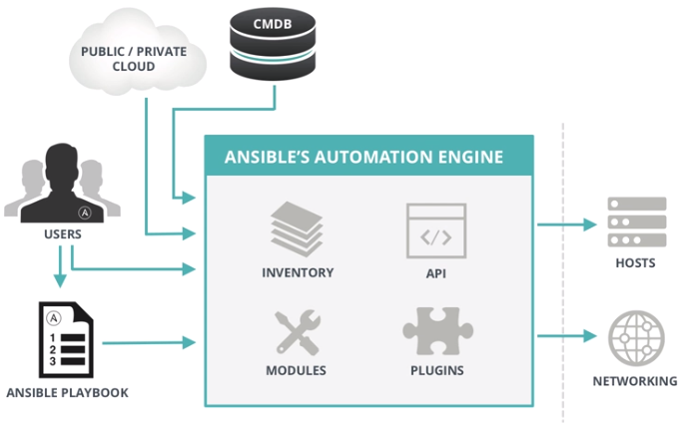
相关文件：
/etc/ansible/ansible.cfg 主配置文件，配置ansible工作特性
/etc/ansible/hosts 主机清单文件
/etc/ansible/rules 角色目录
程序：
/usr/bin/ansible 主程序，临时命令执行工具
/usr/bin/ansible-doc 查看配置文档，模块功能查看工具
/usr/bin/ansible-galaxy 下载/上传优秀代码或Roles模块的官网平台
/usr/bin/ansible-playbook 定制自动化任务，编排剧本工具/usr/bin/ansible-pull 远
程执行命令的工具：
/usr/bin/ansible-vault 文件加密工具
/usr/bin/ansible-console 基于Console界面与用户交互的执行工具
/etc/ansible/ansible.cfg ansible
配置文件（一般保持默认）
[defaults]
#forks = 5 并发执行数量，默认5
#poll_interval = 15 拉取数据间隔时间，默认15秒
#sudo_user = root sudo命令默认用户
#remote_port = 22 连接远程端口号
#host_key_checking = False 检查对应服务器的host_key，##建议取消注释
#log_path=/var/log/ansible.log 日志文件，##建议取消注释
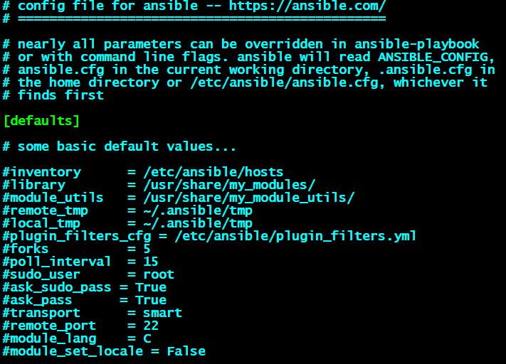
/etc/ansible/hosts
主机清单inventory文件
inventory文件遵循INI文件风格，中括号中的字符为组名。可以将同一个主机
同时归并到多个不同的组中；此外，当如若目标主机使用了非默认的SSH端口，
还可以在主机名称之后使用冒号加端口号来标明
ntp.magedu.com
[webservers]
www1.magedu.com:2222
www2.magedu.com
[dbservers]
db1.magedu.com
db2.magedu.com
db3.magedu.com
如果主机名称遵循相似的命名模式，还可以使用列表的方式标识各主机
示例：
[websrvs]
www[01:100].example.com
[dbsrvs]
db-[a:f].example.com
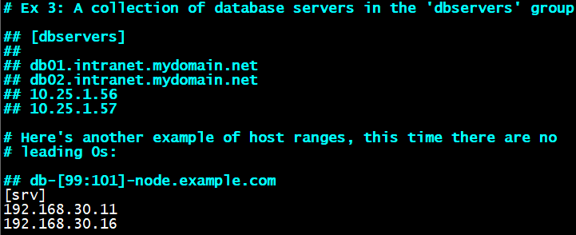
ansible**命令**
功能：通过ssh实现配置管理、应用部署、任务执行等功能
建议：配置ansible端能基于密钥认证的方式联系各被管理节点
格式：ansible
常用选项：
–version 显示版本
-m module 指定模块，默认为command
-v 详细过程 –vv -vvv更详细
–list-hosts 显示主机列表，可简写—list
-k, –ask-pass 提示连接密码，默认Key验证
-K, –ask-become-pass 提示输入sudo
-C, –check 检查，并不执行
-T, –timeout=TIMEOUT 执行命令的超时时间，默认10s
-u, –user=REMOTE_USER 执行远程执行的用户
-b, –become 代替旧版的sudo 切换
ALL 表示列表中的所有主机
示例：
ansible all -m ping
* 支持通配符
示例：
ansible “*” -m ping
ansible 192.168.1.* -m ping
ansible “*srvs” -m ping
或关系
示例：
ansible “websrvs:appsrvs” -m ping
ansible “192.168.1.10:192.168.1.20” -m ping
逻辑与：
ansible “websrvs:&dbsrvs” -m ping
在websrvs组，但不在dbsrvs组中的主机
逻辑非：
ansible ‘websrvs:!dbsrvs’ -m ping
综合逻辑：
ansible ‘websrvs:dbsrvs:&appsrvs:!ftpsrvs’ -m -ping
正则表达式：
ansible “websrvs:&dbsrvs” -m ping
ansible “~(web|db).*.magedu.com” -m ping
ansible命令执行过程
1.加载自己的配置文件 默认/etc/ansible/ansible.cfg
2.加载自己对应的模块文件，如command
3.通过ansible将模块或命令生成对应的临时py文件，并将该 文件传输至远程服务器
的对应执行用户$HOME/.ansible/tmp/ansible-tmp-数字/XXX.PY文件
4.给文件+x执行
5.执行并返回结果
6.删除临时py文件，sleep 0退出
执行状态：
绿色：执行成功并且不需要做改变的操作
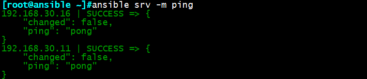
黄色：执行成功并且对目标主机做变更
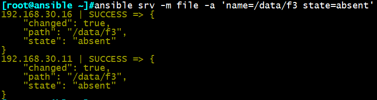
红色：执行失败
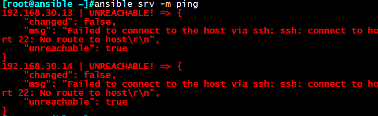
二、ansible常用模块：
查看模块帮助：
ansible-doc module
显示模块简要说明：
ansible-doc -s module
Command模块
功能：默认模块，在远程主机执行命令，可忽略-m选项
ansible srvs -m command -a ‘service vsftpd start’
ansible srvs -m command -a ‘echo magedu |passwd –stdin wang’ 不成功
注意：
（1）使用Command模块执行脚本时，要注意规范，shebang机制，否则将执行失败
（2）不支持管道“|”，变量“$”,以及重定向，需使用shell模块
Shell**模块**
功能：和command相似，用shell执行命令
ansible srv -m shell -a ‘echo magedu |passwd –stdin wang’
注意：
（1）调用bash执行命令 类似 cat /tmp/stanley.md | awk -F‘|’ ‘{print $1,$2}’ &>
/tmp/example.txt 这些复杂命令，即使使用shell也可能会失败。
解决办法：写到脚本，copy到远程，执行，再把需要的结果拉回执行命令的机器
（2）可将默认模块替换为shell：
vim ansible.conf
module_name = shell
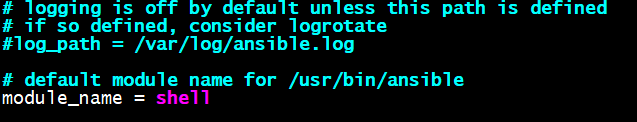
ansible srvs -m command -a ‘echo magedu |passwd –stdin wang’ 成功
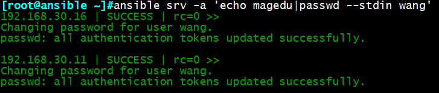
Script**模块**
功能：运行脚本,不需要将脚本复制到被控端
-a “/PATH/TO/SCRIPT_FILE”
snsible websrvs -m script -a f1.sh
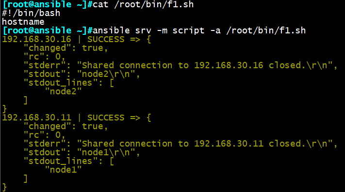
Copy**模块**
功能：从服务器复制文件到客户端,
ansible srv -m copy -a “src=/root/f1.sh dest=/tmp/f2.sh owner=wang mode=600
backup=yes”
如目标存在，默认覆盖，此处指定先备份
ansible srv -m copy -a “content=‘test content\n’ dest=/tmp/f1.txt” 利用内容，直接生成
目标文件
Fetch**模块**
功能：从客户端取文件至服务器端，copy相反，目录可先tar
ansible srv -m fetch -a ‘src=/root/a.sh dest=/data/scripts’
示例：
打包/var/log下所有日志文件并远程抓取
ansible all -m shell -a ‘tar Jcf log.tar.xz /var/log/*.log’
ansible all -m fetch -a ‘src=/root/log.tar.xz dest=/data’
File**模块**
功能：设置文件属性
示例：
创建新文件：
ansible all -m file -a ‘name=/data/f3 state=touch’
删除文件：
ansible all -m file -a ‘name=/data/f3 state=absent’
创建目录：
ansible all -m file -a ‘name=/data/dir1 state=directory’
删除目录：
ansible all -m file -a ‘name=/data/dir1 state=absent’
创建软连接
ansible all -m file -a ‘src=/etc/fstab dest /data/fstab.link state=link’
删除软连接：
ansible all -m file -a ‘dest /data/fstab.link state=absent’
创建文件指定所有者，权限：
ansible srv -m file -a “path=/root/a.sh owner=wang mode=755”
ansible web -m file -a ‘src=/app/testfile dest=/app/testfile-link state=link’
Hostname**模块**
功能：管理主机名，生效同时更改文件永久生效
示例：
更改一个主机的主机名：
ansible node1 -m hostname -a “name=websrv”
注意：
（1）Host模块不会修改/etc/hosts文件中的主机名解析，注意修改
（2）批量修改主机名时最好加变量，防止所有主机名一致
Cron**模块**
功能：计划任务
支持时间：minute，hour，day，month，weekday
示例：
创建计划任务：每周1,3,5，每分钟打印，任务名称：warningcron
ansible all -m cron -a ‘minute=* weekday=1,3,5 job=”/usr/bin/wall FBI warning” name=warningcron’
注释cronname=waringcron的计划任务：
ansible all -m cron -a ‘disabled=true job=”/usr/bin/wall FBI warning” name=warningcron’
给cronname=waringcron的计划任务去掉注释：
ansible all -m cron -a ‘disabled=true job=”/usr/bin/wall FBI warning” name=warningcron’
创建计划任务：每五分钟同步一次服务器时间，任务名称：syntime
ansible srv -m cron -a “minute=*/5 job=’/usr/sbin/ntpdate 172.16.0.1 &>/dev/null’ name=Synctime”
删除计划任务：Synctime
ansible srv -m cron -a ‘state=absent name=Synctime’
Yum**模块**
功能：管理包
示例：
yum安装vsftpd包：（默认state=installd）
ansible all -m yum -a ‘name=vsftpd’
安装多个包用逗号隔开：
ansible all -m yum -a ‘name=vsftpd，httpd’
显示所有已安装的包：
ansible all -m yum -a ‘name=vsftpd list=installd’
卸载vsftpd包：
ansible all -m yum -a ‘name=vsftpd state=removed’
安装从互联网下载的包：
ansible srv -m copy -a ‘src=/root/package.rpm dest=/data/package’
ansible srv -m yum -a ‘name=/data/package.rpm’
更新缓存：
ansible srv -m yum -a ‘update_cache=yes’
更新缓存同时安装dstat包
ansible srv -m yum -a ‘name=dstat update_cache=yes’
Service**模块**
功能：管理服务
示例：
停止httpd服务：
ansible srv -m service -a ‘name=httpd state=stopped’
开启httpd服务：
ansible srv -m service -a ‘name=httpd state=started’
重新加载httod服务：
ansible srv -m service -a ‘name=httpd state=reloaded’
重启httpd服务：
ansible srv -m service -a ‘name=httpd state=restarted’
开启ftp服务，同时设置开机自动启动：
ansible srv -m service -a ‘name=vsftpd state=started enabled=yes’
重启ftp服务：
ansible srv -m service -a ‘name=vsftpd state=restarted’
User**模块**
功能：管理用户
示例：
添加用户，指定uid、家目录、主组及注释：
ansible srv -m user -a ‘name=user1 comment=”test user” uid=2048 home=/app/user1 group=root’
添加一个系统用户：
ansible srv -m user -a ‘name=sysuser1 system=yes home=/app/sysuser1’
删除用户：
ansible srv -m user -a ‘name=user1 state=absent’
添加一个nginx用户：
ansible srv -m user -a ‘name=nginx shell=/sbin/nologin system=yes home=/var/nginx groups=root,bin uid=80 comment=”nginx service”
删除nginx用户同时删除家目录：
ansible srv -m user -a ‘name=nginx state=absent remove=yes’
Group**模块**
功能：管理组
示例：
创建一个系统组：
ansible srv -m group -a “name=testgroup system=yes”
删除一个组：
ansible srv -m group -a “name=testgroup state=absent”
创建nginx组：
ansible srv -m group -a ‘name=nginx system=yes gid=80’
删除nginx组：
ansible srv -m group -a ‘name=nginx state=absent’
三、ansible系列命令：
ansible系列命令包括：
ansible
ansible-doc
ansible-playbook
ansible-vault
ansible-console
ansible-galaxy
ansible-pull
ansible-doc
功能：显示模块帮助
格式：ansible-doc [options] [module…]
-a 显示所有模块的文档
-l 列出可用模块
-s 显示指定模块的playbook片段
示例：
ansible-doc ping 查看ping模块帮助
ansible-doc -s ping 查看ping模块的简单说明
Ansible-vault
功能：管理加密解密yml文件
格式：ans**ible-vault [create|decrypt|edit|encrypt|rekey|view]**
ansible-vault encrypt hello.yml 加密yml文件
ansible-vault decrypt hello.yml 解密yml文件
ansible-vault view hello.yml 查看yml加密文件
ansible-vault edit hello.yml 编辑加密文件
ansible-vault rekey hello.yml 重新修改加密口令
ansible-vault create new.yml 创建新文件
Ansible-console
功能：ansible控制台，可交互执行命令，支持tab
root@test (2)[f:10] $
执行用户@当前操作的主机组 (当前组的主机数量)[f:并发数]$
设置并发数： forks n 例如： forks 10
切换组： cd 主机组 例如： cd web
列出当前组主机列表： list
列出所有的内置命令： ?或help
示例：
列出主机列表中所有主机：
root@all (2)[f:5]$ list
切换至appsrvs组：
root@all (2)[f:5]$ cd appsrvs
列出appsrvs组下所有主机：
root@appsrvs (2)[f:5]$ list
安装httpd：
root@appsrvs (2)[f:5]$ yum name=httpd state=present
开启httpd服务：
root@appsrvs (2)[f:5]$ service name=httpd state=started
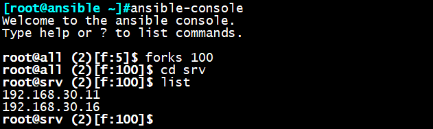
ansible-galaxy
功能：连接https://galaxy.ansible.com下载相应的roles
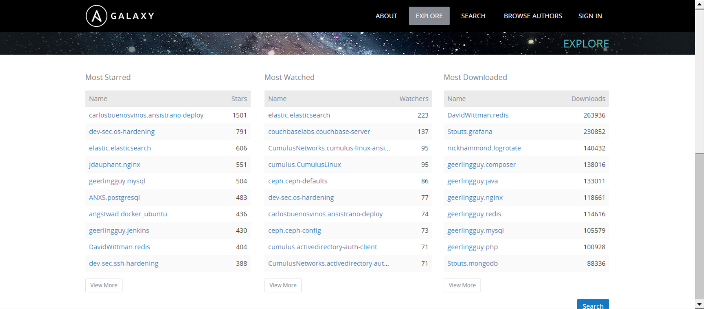
列出所有已安装的galaxy：
ansible-galaxy list
安装galaxy：
ansible-galaxy install geerlingguy.redis
删除galaxy：
ansible-galaxy remove geerlingguy.redis
ansible-pull
功能：推送命令至远程，效率无限提升，对运维技术要求较高
当前应用还较少